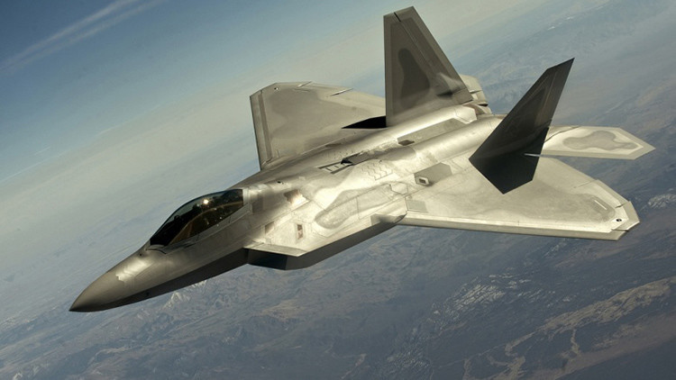
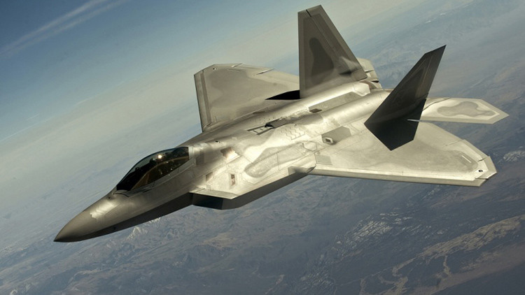

Accesorios
Los accesorios de un avión son componentes y equipos adicionales que se instalan en la aeronave para cumplir
diferentes funciones y mejorar su rendimiento. Estos accesorios pueden abarcar desde partes móviles en las
alas, como flaps y slats, que ayudan en el despegue y el aterrizaje, hasta sistemas de navegación avanzados,
como radares y sistemas de posicionamiento global (GPS), que permiten al piloto saber dónde está y cómo
llegar a su destino de manera segura.

Tipos de accesorios
-
Flaps y Slats: Estas son superficies móviles en las alas que se extienden o despliegan durante el
despegue y el aterrizaje. Ayudan a aumentar la sustentación y reducir la velocidad de la aeronave,
permitiendo despegues y aterrizajes más seguros.
-
Spoilers: Son dispositivos ubicados en las alas que se levantan para interrumpir el flujo de aire sobre
la superficie del ala. Se utilizan para reducir la sustentación durante el aterrizaje y mejorar el
control direccional del avión.
-
Flaps de Hipersustentación: Algunos aviones tienen flaps que pueden extenderse aún más para proporcionar
una mayor sustentación durante el despegue y el aterrizaje. Esto es especialmente útil en pistas cortas
o en condiciones adversas.
-
Alerones: Son superficies móviles en los bordes de las alas que permiten que el avión gire sobre su eje
longitudinal. Controlan el balanceo de la aeronave.
- Timones de Profundidad y Dirección: Estas superficies en el empenaje controlan el ascenso y descenso
(timón de profundidad) y la dirección (timón de dirección) del avión.
- Tren de Aterrizaje: Como mencionado anteriormente, el tren de aterrizaje consta de ruedas y estructuras
que permiten al avión rodar por tierra, despegar y aterrizar de manera segura.
- Unidades de Potencia Auxiliar (APU): Es un motor pequeño ubicado en la cola del avión que provee energía
para sistemas en tierra y para arrancar los motores principales.
- Sistemas de Navegación y Comunicación: Incluyen radios, radares, sistemas de navegación por satélite
(como el GPS) y sistemas de comunicación para mantener a la aeronave en curso y en contacto con el
control del tráfico aéreo.
- Sistemas de Entretenimiento a Bordo: En aviones comerciales, se incluyen sistemas de entretenimiento
para los pasajeros, como pantallas individuales, música, películas y más.
- Sistemas de Combustible y Motorización: Incluyen tanques de combustible, bombas de combustible y
motores principales, que son vitales para la propulsión y el funcionamiento del avión.


 Aviones

Aviones
